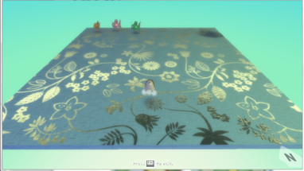

Do It! Kodu: Game Stats
 The Challenge
The Challenge
Your challenge is to learn how to create a Kodu computer game that programs a fish to shoot missiles. Then, it is up to you to make the game even better. After you create your game, you will determine how many fish missiles you launched and round the number to different place value digits.
Project Steps
-
First Game
-
Play Your Game and Round Your Number
-
Improve the Game
-
Round Your Steps
First Game
- Load Shooting Fish world.
- Add Kodu object.
- When: spacebar pressed - Do: shoot a missile
- When: left arrow key is pressed - Do: turn left
- When: right arrow key is pressed - Do: turn right
- Save your game.
Notice that you just programmed your first 3 blocks of code and your first computer game!
Play Your Game and Round Your Number
As you test out your game, keep a running tally on paper or in your head of the number of fish missiles you launched. You can also use the score functionality in Kodu to keep track of how many missiles you’ve shot. What code would you need to add to your game to track the number of missiles you’ve shot? When you are done playing your game, write down the total. You will then round your number to different place value digits.
For example, let’s say you launched 112 missiles.
You can first round your number to the nearest 10. Since the number in the ones place is 2, this would round our number to 110.
Next, you can round your number to the nearest hundred. The number in the tens place is 1. This means we would round our number to 100. 112 is closer to 100 than 200.
When does it make sense to round to the nearest 10? What about the nearest 100?
Improve Your Game
Can you think of ways to make your Kodu game better?
You can watch more video tutorials and then apply what you have learned to make changes to the Shooting Fish game. Go to the Kodu website and choose a video tutorial to watch.
You can change the settings for the missiles that your character shoots so that you can hit the fish more easily. (Right click on your character and choose “Change Settings.” What other settings can you change there?
You can explore Kodu by clicking on different objects and When - Do options to see what happens.
Tip: If you hover your mouse cursor over a menu item, a description of that item will appear.

Ideas:
- Program the game to keep score.
- Program the game to show a “Winner” screen when you score a certain amount of points.
- Program different point scores for hitting different objects or colors of fish.
- Add a timer so the game ends after a certain amount of time.
- Add obstacles for Kodu to shoot around.
- Add other objects for Kodu to shoot.
- Program Kodu for new behaviors, like moving around.
- Program the fish to move differently.
- Change the terrain.
- Add new characters to your world to interact with Kodu.
As you code more features into your game, like timers and behaviors, count the number of code blocks you add in. This will help with the next activity.
Round Your Steps
Now that you have added new features to your game, count the number of code blocks you used so you can use them to practice rounding. For example, if you added 17 blocks of code to your game, you could round 17 to 20. This would be the nearest ten. Be sure to write down the number of blocks in your program and what number you are rounding to. Did you round to the tens place? Did you round to the hundreds place?